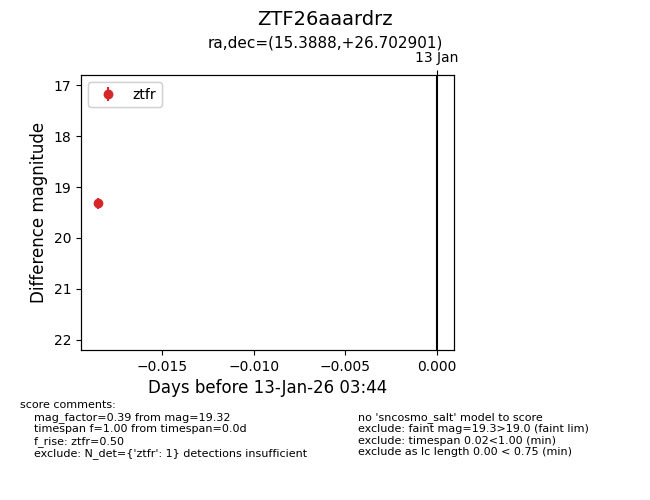
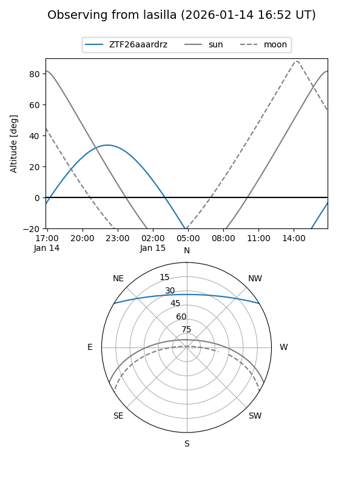
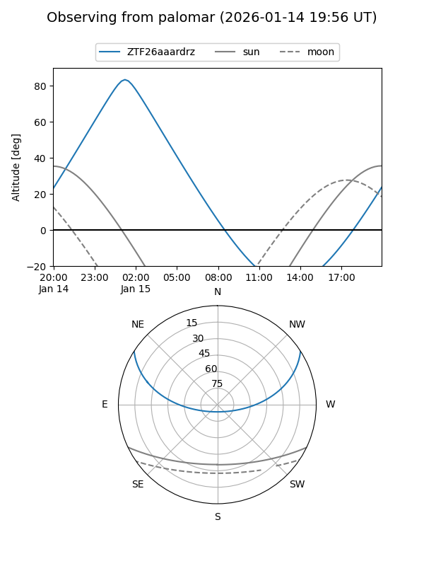

ZTF26aaardrz
Target ZTF26aaardrz at 2026-01-13 03:45
Aliases and brokers:
FINK: link
Lasair: link
ALeRCE: link
alt names
ZTF26aaardrz (ztf,fink_ztf)
Coordinates:
equatorial (ra, dec) = 15.3888,+26.70290
equatorial (HMS+DMS) = 01:01:33.31,+26:42:10.44
galactic (l, b) = (125.7292,-36.11389)
Flags:
Photometry:
last ztfr=19.32
1 ztfr detections
Lightcurve

Visibility


Additional plots